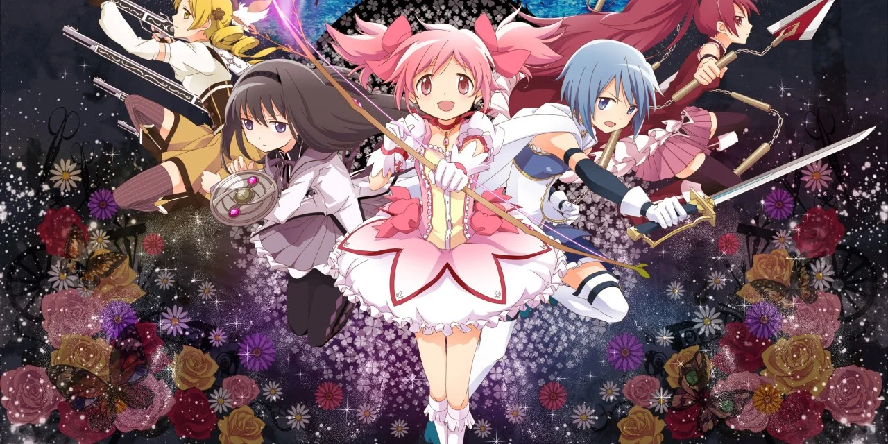

Aunque a primera vista pueda parecer una serie de chicas mágicas normal y corriente, Madoka Magica revolucionó el género replanteando sus cimientos y sus tropos más desgastados. Es una historia más dura de lo que se puede vaticinar tras ver los primeros episodios, con una gama de grises amargos que sorprende con un final inolvidable. Con tan solo doce episodios, una buena elección para pasar un fin de semana pegado a la pantalla.
